Анализ потерянных конверсий — полное руководство

Вы знали, что в Google AdWords можно посмотреть, сколько конверсий и, соответственно, транзакций было потеряно? Конечно, большинство слышат об этом впервые, так как в стандартных отчетах AdWords данные показатели не фигурируют.
Оценить потерянную прибыль позволяет показатель «процент потерянных показов в связи с бюджетом и рейтингом». Из-за потерянных показов теряются конверсии и прибыль. На данном этапе все просто. Но, пользуясь только отчётами Google Analytics и AdWords, невозможно полноценно оценить, какое количество конверсий вы в итоге потеряли из-за ограниченного бюджета или в связи с низким рейтингом ваших объявлений. А такой подсчёт очень полезен при анализе и оптимизации рекламных кампаний. Если получить полную картину, то можно чётко увидеть, в каких кампаниях недостаточно бюджета и с какими ключевыми словами необходимо поработать, чтобы повысить показатель качества.
Интеграция с Supermetrics
Для начала необходимо установить дополнение Supermetrics для таблиц Google. Для этого откройте докс-шаблон, в котором будут выводиться все необходимые отчёты. Создайте копию этого шаблона на своём Google Диске (меню Файл -> Создать копию). Далее в меню выберите «Дополнения -> Установить дополнения»:
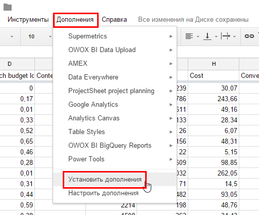
Когда откроется диалоговое окно «Дополнения», в поиске в верхнем правом углу введите Supermetrics и после того, как вы нажмёте Enter, остаётся только установить дополнение нажатием кнопки «+ бесплатно»:
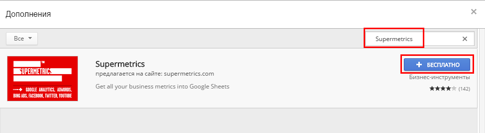
Разрешайте все действия, к которым просит доступ дополнение при установке:
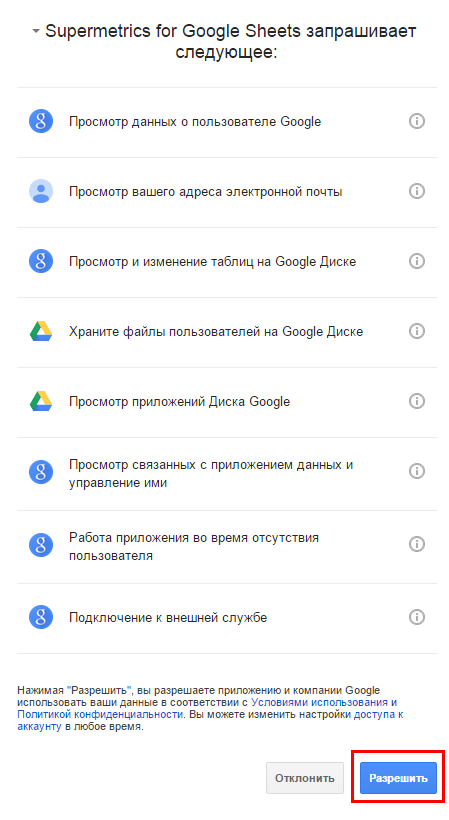
Supermetrics появится в списке ваших дополнений. Следующий шаг. Выберите в меню пункт Launch sidebar:
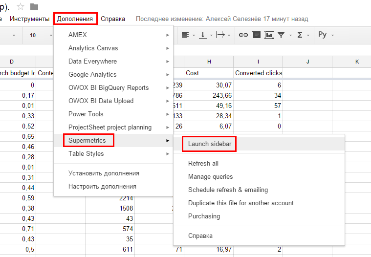
В меню DataSource выбираем AdWords:
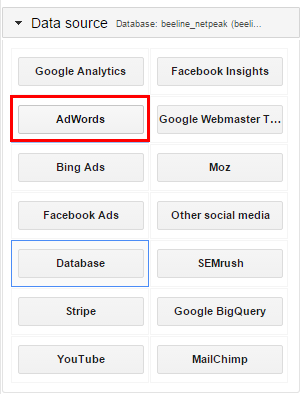
Затем даём Supermetrics автономный доступ к вашему аккаунту AdWords, нажав кнопку «Разрешить»:
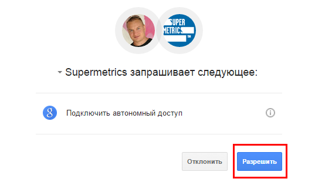
После связки Supermetrics и AdWords переходим в меню Select accounts, и, используя выпадающий список, выбираем нужный аккаунт AdWords.
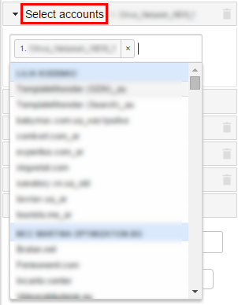
В меню Select dates (диапазона дат для отчёта) из выпадающего списка вы можете выбрать один из возможных вариантов периода для построения отчёта:
- Today — будут загружены данные за текущий день;
- Yesterday — в отчёт будут загружены данные за вчерашний день;
- Last Week (sun — sat) — в отчёте будут данные за прошлую неделю, началом недели будет считаться суббота;
- Last Week (mon — sun) — аналогично предыдущему показателю, но началом недели в данном случае будет понедельник;
- This month to date — в отчёт будет выводиться информация с первого дня текущего месяца по сегодня включительно;
- Last month — выбрав этот пункт, вы построите отчёт за прошлый месяц;
- Year to date — в отчёте будет информация с 1 января текущего года по сегодня;
- Last year — выгрузка данных за прошлый год;
- Last year & this year to date — в отчёте будет выводиться информация с 1 января прошлого года по текущий день включительно;
- Last X days — количество дней, за которые при каждом обновлении отчёта будут выводиться данные. Также вы можете установить галочку including today, чтобы показатель включал в себя текущие сутки;
- Last X weeks (sun — sat) — аналогично предыдущему показателю, только вы указываете количество прошлых недель, информацию за которые вы планируете вывести в отчёт. Также можно установить галочку including this week, в данном случае началом недели считается воскресенье;
- Last X weeks (mon — sun) — даёт возможность указать количество недель, данные за которые вы хотите получить в отчёте. Началом недели считается понедельник;
- Last X months — позволяет указать количество прошедших месяцев, за которые вам нужны данные в конечном отчёте и диаграммах;
- Last X years — выбираете количество лет, за которые будут выводиться данные;
- Custom data range — даёт возможность выбрать начальную и конечную даты, за которые вы выгрузите информацию в отчёты.
После того как вы определили период, за который хотите получить отчёты и диаграммы, переходим к самой важной части настройки Supermetrics. Открываем меню Select metrics. В меню выбора необходимых метрик вам надо выбрать следующие показатели в той же последовательности, в которой они перечислены ниже:
- Lost search IS due to rank;
- Lost content IS due to rank;
- Lost search IS due to budget;
- Lost content IS due to budget;
- Impressions;
- Clicks;
- Cost;
- Converted clicks.
Сохранить последовательность метрик важно для корректного отображения диаграмм. В результате поле Select metrics у вас будет выглядеть так же, как на рисунке ниже:
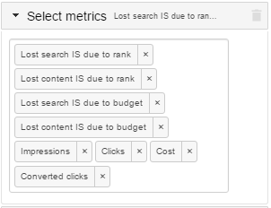
Далее нам необходимо выбрать параметры, по которым мы будем выводить отчёт. В нашем случае параметром будет название рекламных кампаний. Переходим в меню Split by, и в подменю Split to rows указываем параметр Campaign name. Подменю Split to columns в данном случае оставляем пустым:
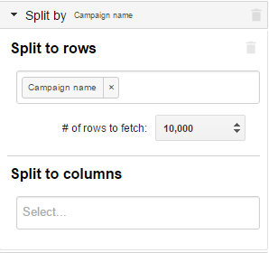
На этом настройка Supermetrics завершена. Посмотрим, какие отчёты можно получить в результате данных настроек.
Отчет и диаграммы для анализа потерянных конверсий
Отчёт по оптимизации бюджета в разрезе рекламных кампаний
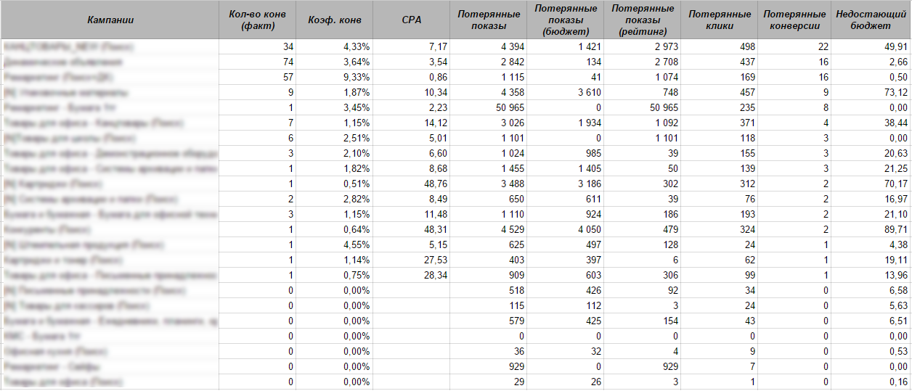
В этом отчёте можно посмотреть количество потерянных показов, связанных с бюджетом и рейтингом (такого отчёта нет в Google AdWords). Также здесь показаны потерянные клики (с учетом текущего CTR) потреянные конверсии (с учётом текущего коэффициента конверсии). В поле «Недостающий бюджет» выведена приблизительная сумма, которой не хватило для того, чтобы не было потери показов в каждой из кампаний. На основании этих данных легко откорректировать и перераспределить бюджет.
Оценить эффект от применения той или иной тактики и оптимизировать бюджеты помогает и когортный анализ в Google Analytics. Читайте пошаговую инструкцию по его внедрению.
Диаграмма «Потерянные показы»
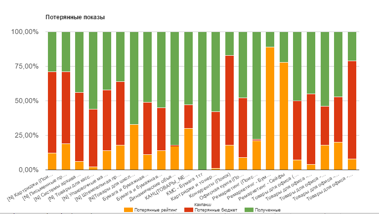
На данной диаграмме отображается, в каких кампаниях существуют большие потери показов. При этом потерянные показы разделяются на потери, связанные с бюджетом и рейтингом. Зелёным цветом выделены полученные показы, красным — показы, потерянные из-за ограниченного бюджета, оранжевым — показы, потерянные в связи с проигранными аукционами. Анализируя эту диаграмму, вы можете более эффективно перераспределить рекламный бюджет и оптимизировать показатель качества ключевых слов в кампаниях, где существует большой процент потерянных показов в связи с низким рейтингом. Также можно поднять рейтинг объявлений с помощью повышения ставки, если стоимость транзакции и клика в данных кампаниях позволяет это сделать.
Диаграмма «Потерянные конверсии»
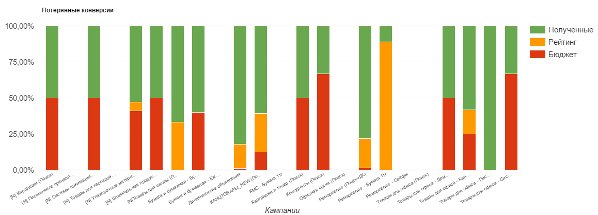
Диаграмма строится по такому же принципу, как и диаграмма «Потерянные показы», но в данном случае вы видите последствия, к которым привели недополученные показы объявлений.
Диаграмма «Процент потерянных конверсий»
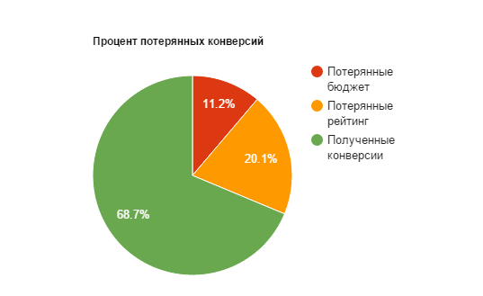
Диаграмма сигнализирует о наиболее проблемных участках рекламных кампаний и наглядно показывает результат, который мы не дополучили в связи с дефицитом бюджета или отсутствием работы над показателем качества ключевых слов. Актуализация отчетов по потерянным конверсиям Чтобы получить все эти диаграммы и актуализировать данные по ним, переходим на листе RawData в ячейку A1 и жмём на SideBar кнопку Get Data to Table:
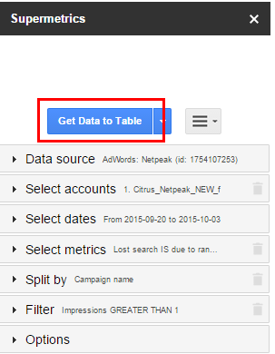
После чего все описанные отчёты будут актуализированы, и в дальнейшем для переключения аккаунтов просто выбирайте нужный в меню Select account. Также вы в любой момент можете быстро перестроить все отчёты и диаграммы, изменив период в меню Select dates. Каждый раз меняя аккаунт или временной период, необходимо ставить курсор в ячейке A1 на листе RawData и нажимать Get Data to Table.
Алгоритм достаточно внедрить только один раз. Дальше переключаться по своим проектам вы сможете с помощью обычного выпадающего списка. Диапазон дат для построения отчёта также можно будет изменять без необходимости повторения всех описанных выше действий.
Распределяйте бюджет, работайте над показателем качества подобранных вами ключевых слов и оптимизируйте ваши рекламные кампании с радостью.